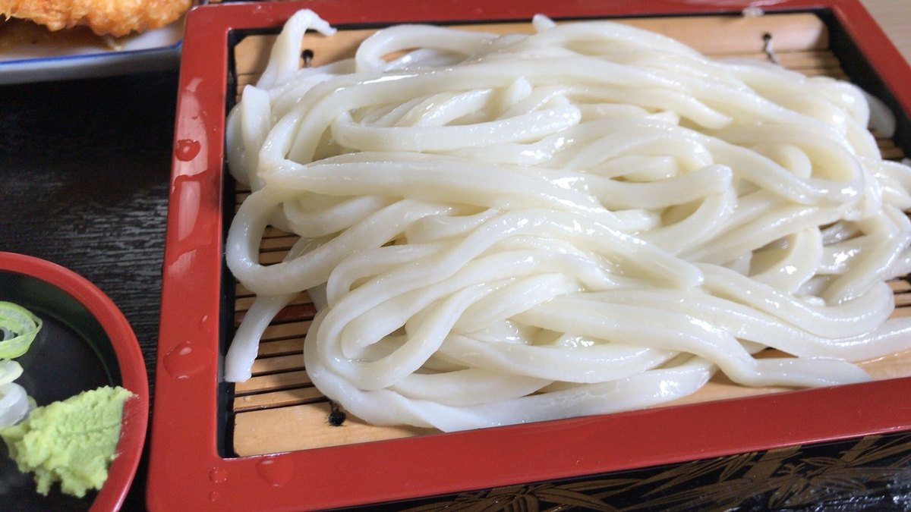
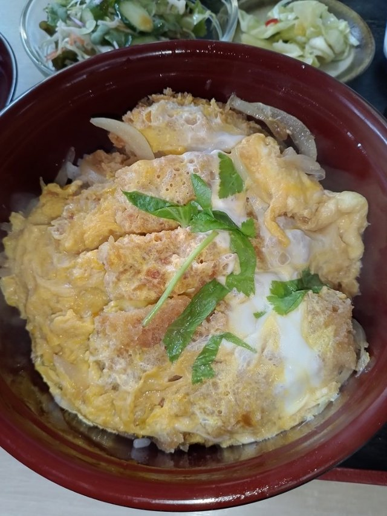
県道124号沿い、国道125号との分かれ道から500mほどでございます。奥まった場所にございますので、青いのれんを目印にお越しくださいませ。
どちらかを小ぶりにすることは、いたしません。丼ものもうどんも一人前ずつ、一枚のお盆にのせてお出しします。
うどんは温かいものと冷たいもの、どちらかをお選びいただけます。かつ丼セットは1,000円（税込）でございます。
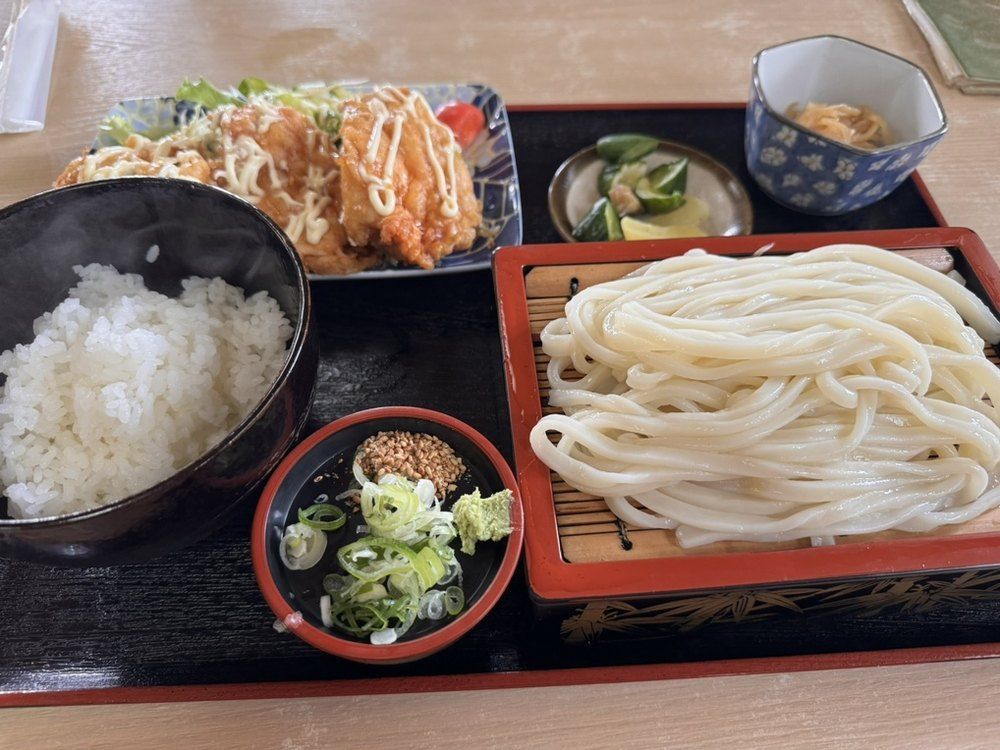
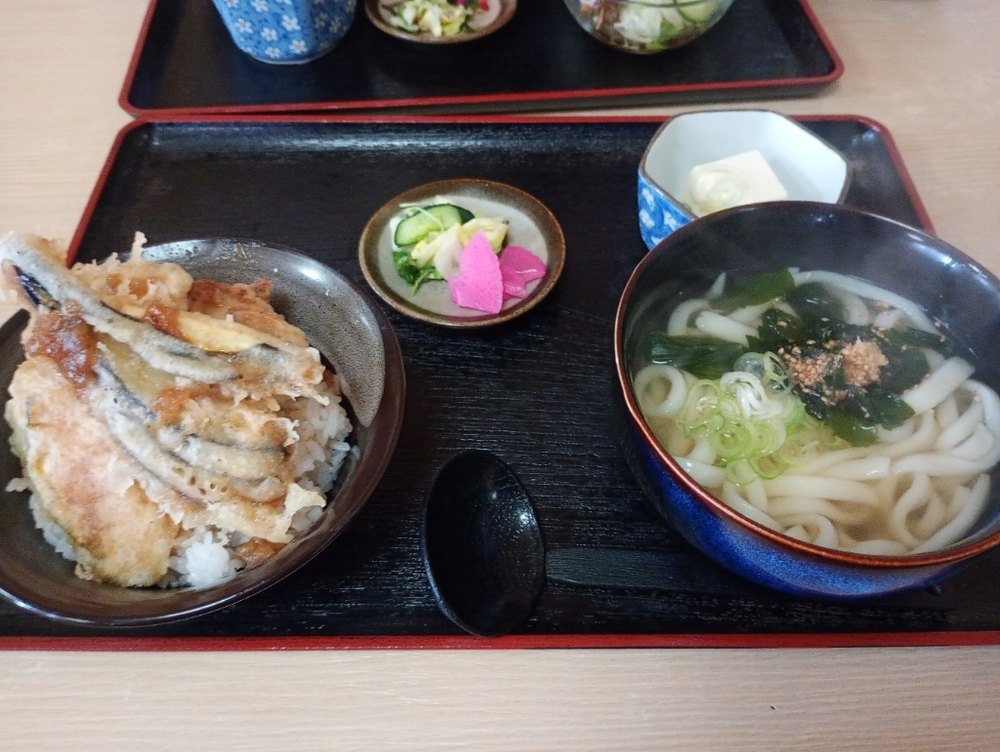
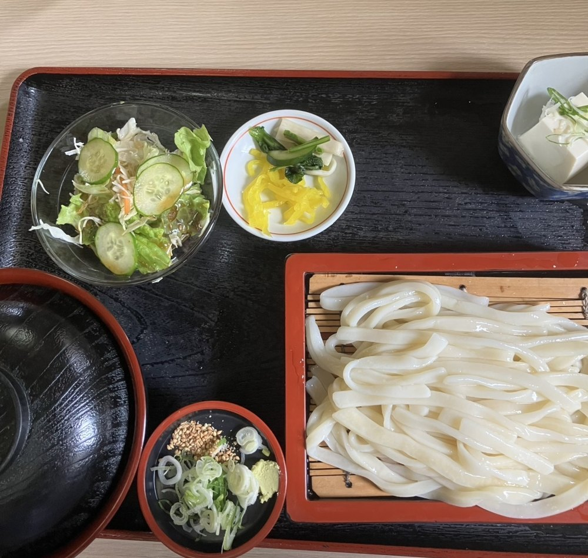
冷たいうどんは、よく冷やして締めてからお出しします。締めたぶんだけ、噛んだときの弾みがはっきりといたします。温かいうどんは、あっさりとしたおつゆでやわらかく仕上げます。
同じ一玉でも、召し上がり方で別のものになります。大盛りも承りますので、お申しつけくださいませ。
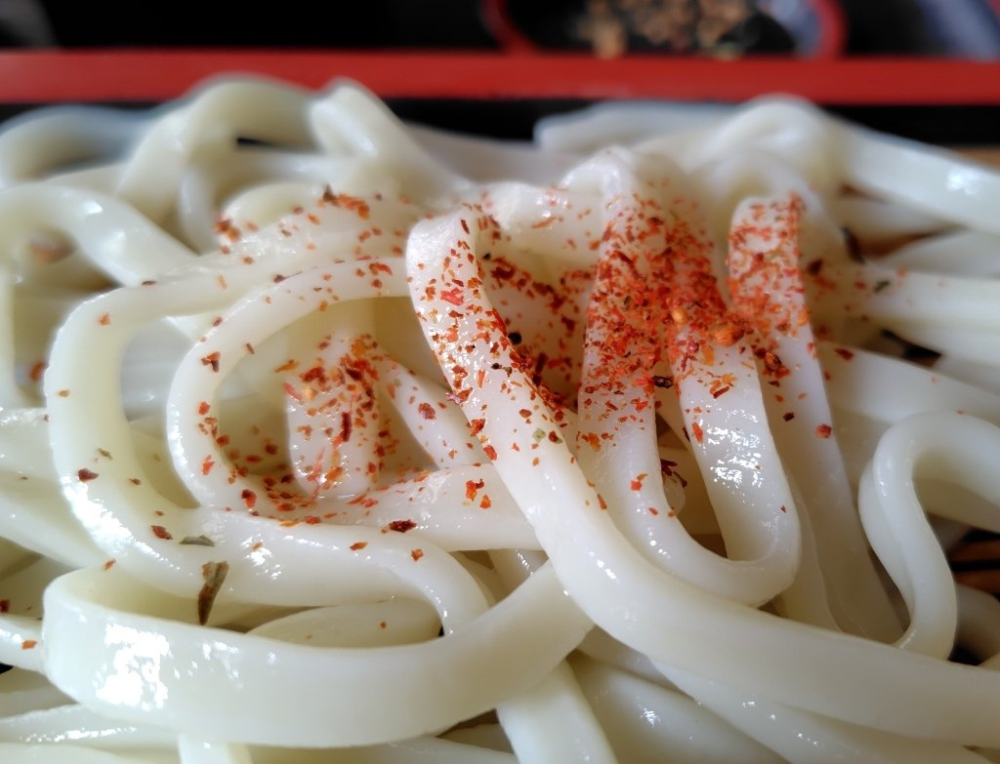
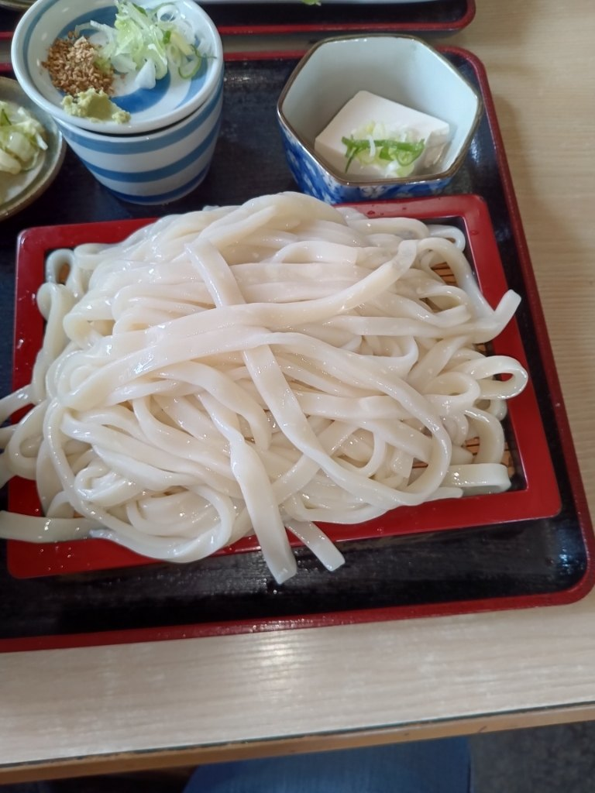
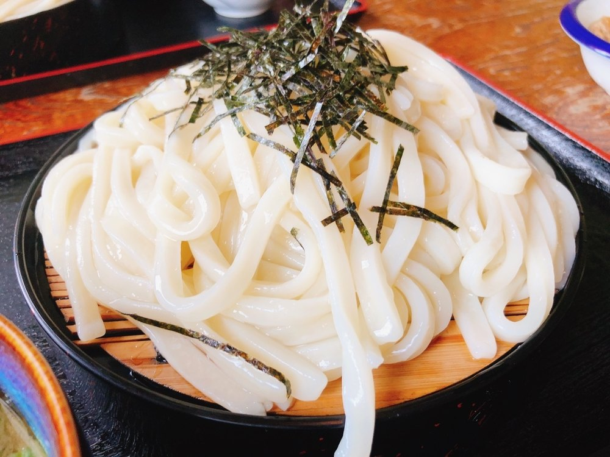
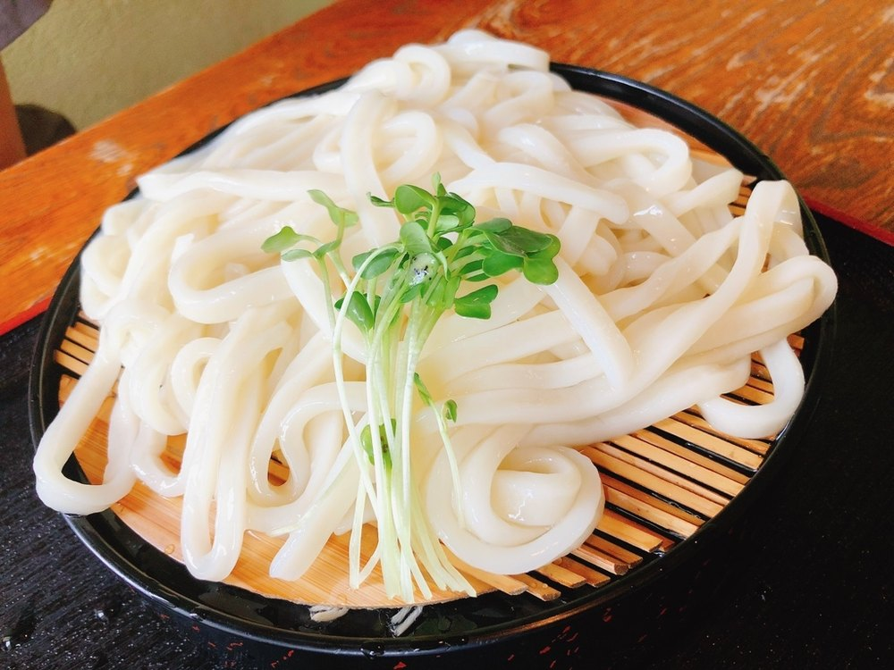
お履き物を脱いでゆっくりなさりたいお客様、小さなお子様をお連れのお客様には、小上がりのお座敷をご用意しております。
全席禁煙でございます。お支払いは現金のみ承っております。
お席の空き具合や、お子様連れでのご利用について、ご不明な点はお電話でお気軽にお尋ねくださいませ。
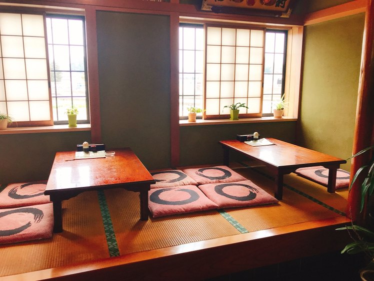
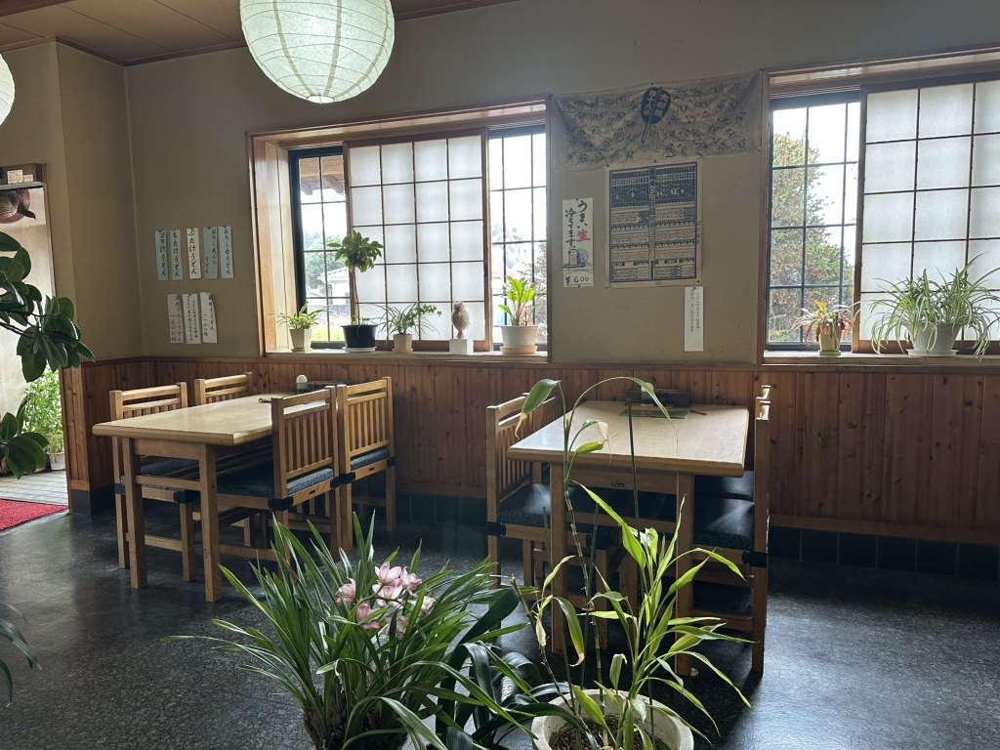
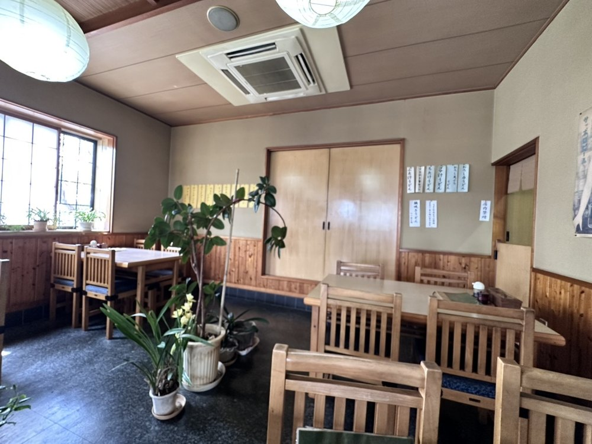
ツルツルもちもち、柔らかめだけど、芯はしっかり硬めでコシというか弾力があります
丼の上にドーンと鎮座するカツは、黄金色に輝くサクサク衣。卵でふんわりとじられ、ご飯の上で旨味を解き放っている
「かつ丼」に「天重」「カレーライス」に「カキフライ」等々豊富なセットメニューが素晴らしい
小上がりもあり、素敵な雰囲気であります
県道からは少し奥まっておりますので、はじめてのお客様は行き過ぎてしまうことがございます。青いのれんと赤いのぼりを目印になさってくださいませ。
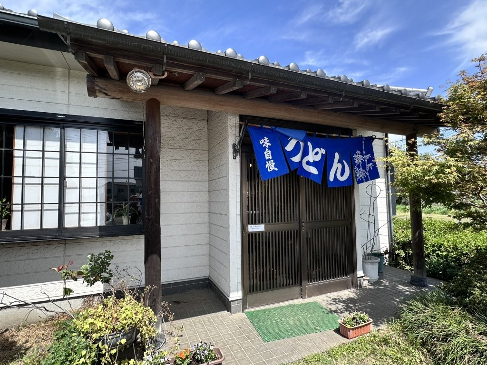
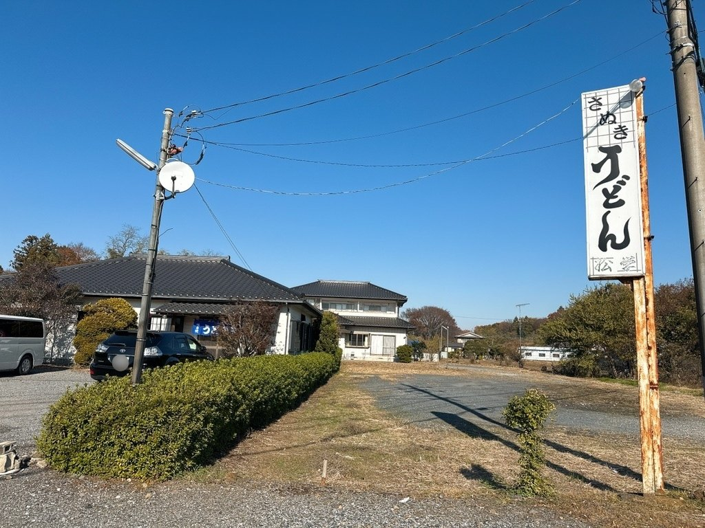
| 住所 | 〒306-0201 茨城県古河市上大野707-6 |
|---|---|
| 電話 | 0280-98-2968 |
| 営業時間 | 11:00〜14:00 16:30〜19:00 |
| 定休日 | 水曜日 |
| お席 | テーブル席・小上がりのお座敷／全席禁煙 |
| 駐車場 | 砂利敷きの広い駐車場がございます |
| お支払い | 現金のみ承っております |